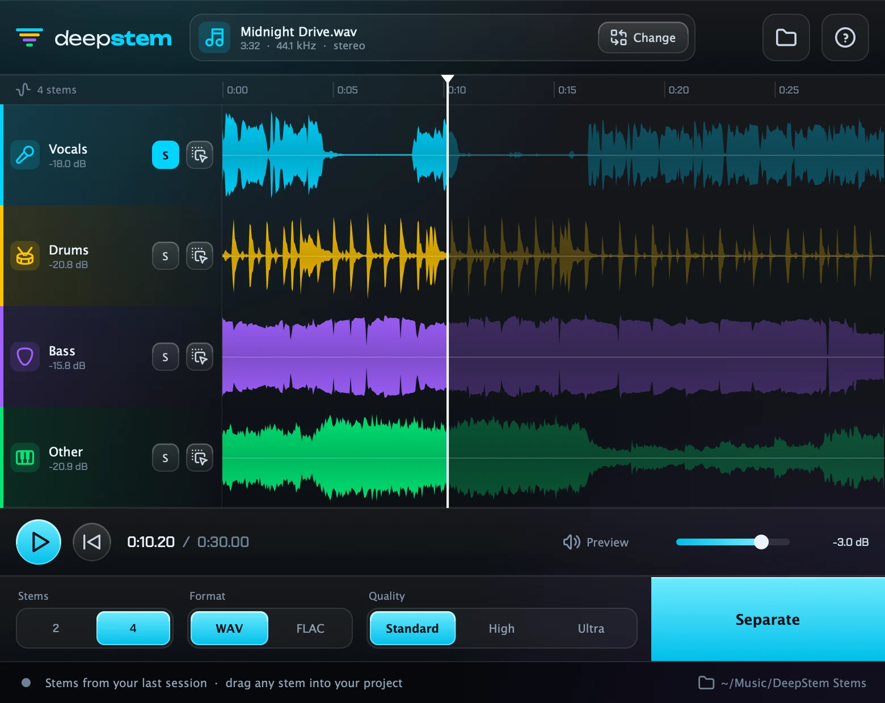

DeepStem separates vocals, drums, bass and everything else with AI. It runs entirely on your computer, with no uploads, no account and no subscription.
Windows without an installer: portable VST3 ZIP (129 MB)
VST3 plug-in and standalone app · works in FL Studio, Ableton Live, Cubase, Studio One, Reaper, Bitwig and other VST3 hosts

Load a song, press Separate, then drag the stems into your project.
Vocals and instrumental for karaoke, sampling and remixes, or vocals, drums, bass and other.
All stems play together through the plug-in. Solo one, click a waveform to jump.
Every stem has a handle. Drag it straight into your timeline as a 24-bit WAV or FLAC.
Standard for speed, High for smoother results, Ultra for our best-sounding model.
Your music never leaves your computer. No internet connection needed after installing.
Stems come back when you reopen your project, so you can keep working where you left off.
Takes about a minute. Both installers include everything DeepStem needs.
DeepStem-Windows-Setup.exe with the button above and open it.DeepStem.vst3 into C:\Program Files\Common Files\VST3.C:\Program Files\Common Files\VST3, the standard folder every DAW scans. The DeepStem app appears in the Start menu.DeepStem-macOS.pkg with the button above./Library/Audio/Plug-Ins/VST3 and the app to Applications.The same steps in the plug-in and in the standalone app.
Music/DeepStem Stems/<song>.It depends on your computer. As a rough guide, a 3½-minute song takes about 1½ minutes on Standard on an Apple M1, and longer on older laptops. High and Ultra are slower. DeepStem shows the real time left while it works.
Windows SmartScreen and Defender warn about programs from publishers they don’t know yet. DeepStem’s beta installer isn’t code-signed, so it gets this warning even though it’s clean. A signed version is coming. Until then you can click through the warning as described above, or use the portable ZIP, which contains just the plug-in and needs no installer.
No. Everything runs on your computer and your audio is never uploaded.
Any DAW that loads VST3 plug-ins: FL Studio, Ableton Live, Cubase, Studio One, Reaper, Bitwig and more. For Logic Pro, GarageBand or no DAW at all, use the standalone DeepStem app.
Rescan your plug-ins and look under instruments, not effects. Check the plug-in is in your VST3 folder: C:\Program Files\Common Files\VST3 on Windows, /Library/Audio/Plug-Ins/VST3 on macOS.
| Windows | Windows 10 or 11, 64-bit, about 400 MB free space, 8 GB RAM recommended |
| macOS | macOS 11 Big Sur or newer, Apple Silicon or Intel, about 400 MB free space, 8 GB RAM recommended |
| DAW | Any VST3 host, or the included standalone app |
/Library/Audio/Plug-Ins/VST3/DeepStem.vst3, /Applications/DeepStem.app and /Library/Application Support/DeepStem.